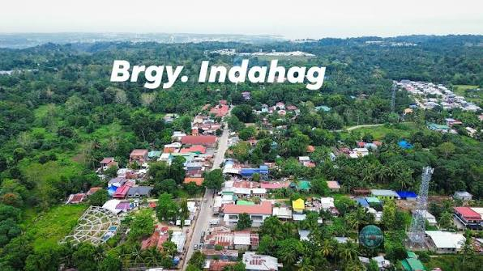

Barangay Indahag is a progressive upland community in Cagayan de Oro City, located in the city's 2nd legislative district. Sitting 250 meters above sea level, it is home to 17,831 residents and serves as a vital expanding area for residential and commercial development in the city's uptown sector.
